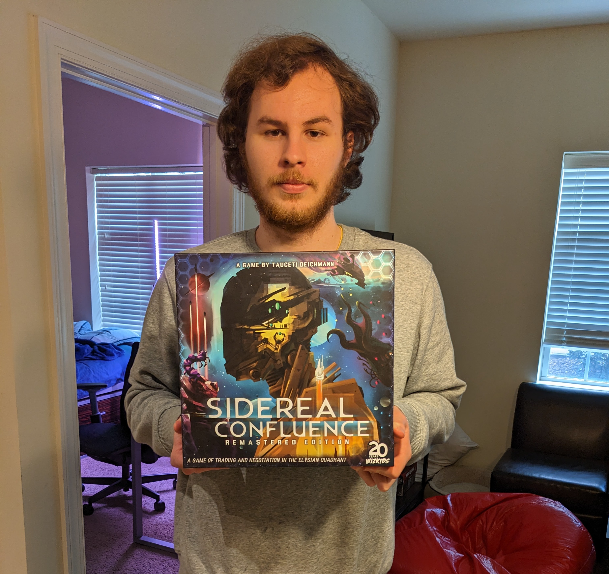

During the first meeting of Phoenix Chassin's board game club, the group played the cooperative game Horrified. The players worked together to defeat the various monsters terrorizing their town. After a tense game, the group was victorious, and everyone celebrated their win. The game provided a great opportunity for players to hone their teamwork and problem-solving skills, as well as enjoy a thrilling game.

At a recent meeting of Phoenix Chassin's board game club, the group played the strategy game The King is Dead. After a fierce competition, Jake emerged as the victor. His clever strategies and quick thinking earned him the admiration of the other players. The game provided an excellent opportunity for the players to test their strategic skills and compete against each other in a friendly atmosphere.
At a recent meeting of Phoenix Chassin's board game club, the group played the challenging game Sidereal Confluence. The game requires players to trade resources, negotiate with other players, and manage their civilization's economy. After a long and tense game, Aaran emerged as the winner, impressing everyone with his strategic skills and ability to make tough decisions. The game provided an excellent opportunity for players to test their negotiation and strategic skills, as well as enjoy a challenging and engaging game.
In the most recent meeting of Phoenix Chassin's board game club, the group played the exciting game Tiny Epic Mechs. The players controlled miniature robots, competing against each other in a futuristic arena. Phoenix emerged as the winner, demonstrating impressive tactical skills and quick reflexes. The game was a great opportunity for the players to engage in friendly competition and have fun while honing their strategic abilities.